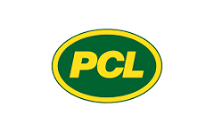

Government infrastructure projects, whether it’s a new transport hub, a major hospital, or an urban renewal initiative, are rarely simple undertakings. They involve large teams, multiple disciplines, and strict performance standards. This is where BIM Coordination steps in as a game-changer.
BIM Coordination refers to the process of bringing together different building information models, architectural, structural, and MEP (mechanical, electrical, and plumbing) into a unified, clash-free environment. It ensures that everyone involved in the project is working with the same accurate data, minimising conflicts before they reach the construction site.
In Australia, the importance of BIM coordination has grown alongside the country’s substantial investment in public infrastructure. Federal and state governments are channelling billions into transport upgrades, healthcare facilities, defence installations, and sustainable urban projects. Advanced BIM coordination plays a key role in:
Globally, Australia’s BIM expertise in the Architecture, Engineering, and Construction (AEC) industry is highly respected. The country’s approach combines cutting-edge technology with practical, collaborative workflows, setting a benchmark for government infrastructure delivery.
Government projects operate on a scale and level of accountability that leaves little room for error. Here’s why they require the very best in BIM coordination.
A single infrastructure project might involve architects, engineers, contractors, consultants, and government agencies. Coordinating inputs from such a diverse team is no small feat. BIM coordination provides a centralised platform where design data from all disciplines can be integrated, checked, and refined before construction begins.
Taxpayers fund government projects, so transparency is non-negotiable. Budgets, safety standards, and environmental goals must be met and ideally exceeded. BIM coordination supports this by creating an audit trail of design decisions, approvals, and changes.
Modern BIM isn’t just about 3D models. 4D BIM adds the element of time, helping teams visualise construction sequencing, while 5D BIM incorporates cost data for accurate budgeting. These capabilities are invaluable for large-scale projects where schedule and budget overruns can have significant public and political consequences.
Australia’s national strategies emphasise environmentally responsible infrastructure. BIM coordination supports this by enabling energy modelling, waste reduction planning, and the use of low-impact materials, all aligned with sustainable building codes.
Australia’s reputation for high-quality government infrastructure delivery is built on the expertise of its top BIM coordination specialists. Here are some of the most notable contributors.
Jacobs is well-known for its ability to handle multi-disciplinary BIM integration across transportation, water, and defence sectors. Their workflows include advanced clash detection, simulation, and asset management techniques. Jacobs is also a leader in adopting digital twin technology, which creates real-time, data-driven replicas of infrastructure assets for improved operational efficiency and maintenance planning.
Website: https://www.jacobs.com/
Arup blends engineering precision with innovative design thinking. They are pioneers in sustainable infrastructure, often coordinating projects that involve multiple stakeholders and complex technical challenges. Arup’s strength lies in integrating BIM with environmental modelling, an approach that supports resilient urban systems and enhances the sustainability of public works. They have also been deeply involved in government-led innovative city initiatives.
Website: https://www.arup.com/
Tesla Outsourcing Services specialises in offshore BIM coordination for large government projects. Their teams deliver high-accuracy 3D modelling and clash resolution, ensuring compliance with Australian standards while keeping costs manageable. With the ability to quickly scale resources, Tesla Outsourcing Services is well-suited for projects with tight deadlines or fluctuating workloads.
Website: https://www.teslaoutsourcingservices.com/

PCL Construction has a reputation for hands-on delivery in government and community infrastructure. Their use of advanced BIM coordination focuses on ensuring constructability, efficiency, and adherence to safety regulations. They are also strong proponents of prefabrication workflows, which can significantly reduce on-site labour requirements and construction timelines. Their portfolio includes public buildings and major transport facilities.
Website: https://www.pcl.com/au/en
As a global leader with significant Australian operations, WSP excels in sectors such as transport, health, and defence. Their expertise spans the full project lifecycle from planning and design to construction and asset management. WSP’s BIM approach supports sustainable procurement and long-term asset performance, which is critical for the public sector. They have a proven track record of delivering large, technically complex projects.
Website: https://www.wsp.com/
Successful government infrastructure projects rely on more than just technology; they require disciplined processes and best practices.
One of BIM coordination’s most valuable functions is detecting clashes between different building systems before construction starts. This avoids costly rework and keeps projects on schedule.
A CDE serves as the single source of truth for all project stakeholders. By centralising information, teams can access the latest drawings, specifications, and updates without confusion or duplication.
4D BIM links the 3D model to the project schedule, while 5D BIM ties it to cost estimates. Together, they provide a powerful tool for aligning design intent with time and budget constraints.
Energy performance simulations, material lifecycle analyses, and waste reduction strategies can all be integrated into the BIM process. This supports the delivery of infrastructure that meets environmental targets.
Automated model checking can flag potential breaches of building codes or environmental regulations early in the design process, saving time during the approval stages.
The next decade promises significant advances in how BIM coordination supports public infrastructure.
Post-construction, digital twins will enable asset owners to monitor real-world performance and predict maintenance needs, extending the life of infrastructure assets.
Artificial intelligence will analyse vast amounts of project data to identify potential risks before they materialise, further reducing delays and cost overruns.
ting self-monitoring systems that can adjust to changing conditions in real time.
Australia’s public sector infrastructure is recognised globally for its quality, sustainability, and efficiency thanks to the expertise of BIM coordination specialists like Jacobs, Arup, Tesla Outsourcing Services, PCL Construction, and WSP. By combining advanced technology with proven processes, these organisations ensure that government projects are delivered on time, within budget, and to the highest standards, reducing risks, improving transparency, and maximising long-term public value. As BIM coordination evolves with innovations such as digital twins, AI analytics, and smart infrastructure integration, collaboration between these skilled specialists and government stakeholders will remain essential to meeting future challenges and maintaining Australia’s position as a global benchmark for infrastructure excellence.